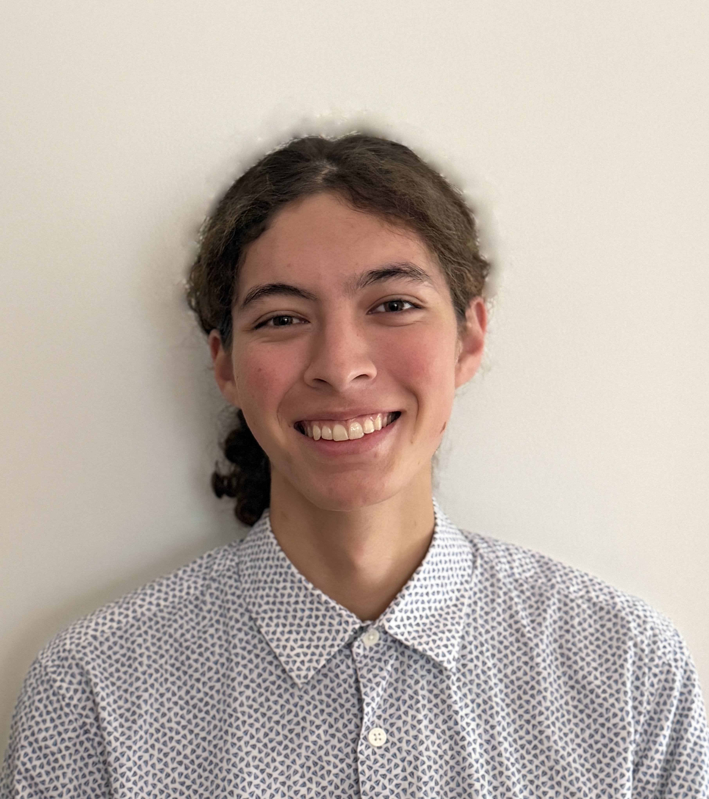

Welcome to my official tutoring page! I specialize in providing comprehensive, individualized academic support for high school students preparing for their HSC examinations. My goal is to help every student achieve the best result they possibly can :)
My tutoring largely focuses on STEM subjects, breaking down abstract concepts into manageable, logical steps to build foundational understanding rather than relying on rote memorization.
Hey! I'm Violet, I graduated highschool in 2024 and am now studying Electrical Engineering and International Relations at UNSW! My personal hobbies include understanding and designing audio electronics, bouldering, and wingfoiling! I'm a huge fan of rock music specificially my favourite bands HUM and julie. Now thats enough about my hobbies, onto the academic details...
Having recently completed the HSC, I have a clear, up-to-date understanding of the current NESA syllabus, marking criteria, and examination expectations and remain informed of any changes which NESA makes so I can adjust my lessons accordingly.
Im now in university and as previously mentioned I study Electrical and International Relations. Should anyone want tutoring for any first year courses besides ELEC1111 (as a demonstrator it would be a conflict of interest for me to tutor privately, instead I recomend speaking to the Academics at ELSOC about revision sessions) feel free to contact me!
I've been teaching students since mid 2024 and thus have a wide range of experience with students of all sorts. My experiences include work as a;
Sessions are tailored to the individual student's pacing and learning style. I provide detailed feedback, structured lesson plans, and personalised marking.
If you are interested in arranging an initial consultation or have any questions regarding current timetable availability or anything else, please reach out directly.
Email: violetbustos@icloud.com